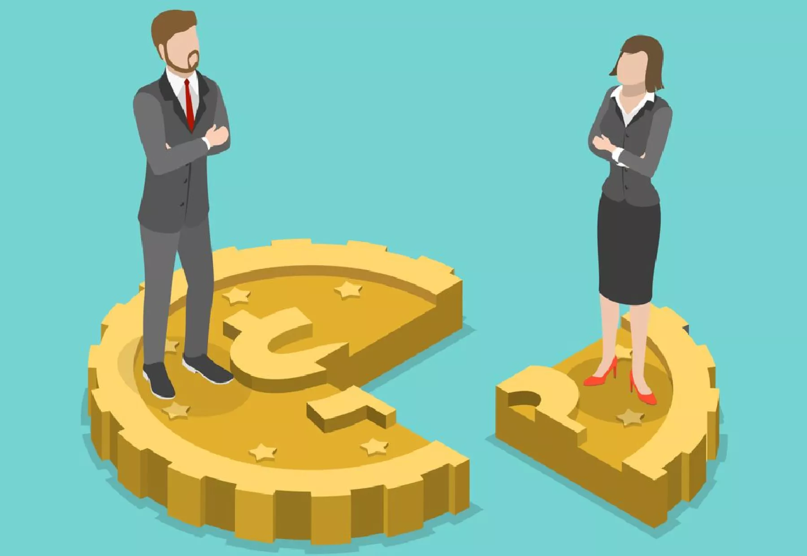
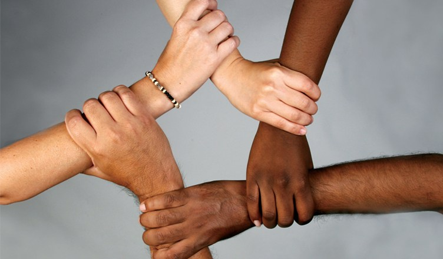

La reducción de las desigualdades es un objetivo fundamental para lograr un desarrollo sostenible y equitativo. Es esencial implementar políticas que promuevan la inclusión social, económica y política de todas las personas, independientemente de su edad, género, raza, etnia, origen, religión, estatus económico u otra condición.
Historia 1: La brecha salarial de género

En muchas partes del mundo, las mujeres siguen ganando menos que los hombres por el mismo trabajo. Esta desigualdad salarial afecta negativamente a las mujeres y sus familias, perpetuando ciclos de pobreza y limitando las oportunidades de desarrollo.
Historia 2: Discriminación racial en el empleo

Las personas de minorías raciales a menudo enfrentan discriminación en el lugar de trabajo, lo que les impide acceder a empleos bien remunerados y oportunidades de ascenso. Esta discriminación contribuye a la perpetuación de las desigualdades económicas y sociales.
Historia 3: Acceso desigual a la educación

En muchas regiones, los niños de familias pobres o de minorías étnicas tienen menos acceso a una educación de calidad. Esto limita sus oportunidades de futuro y perpetúa las desigualdades intergeneracionales.
Es crucial que todos tomemos conciencia de estas desigualdades y trabajemos juntos para crear un mundo más justo e inclusivo. Implementar políticas inclusivas y promover la igualdad de oportunidades para todos es un paso esencial hacia un desarrollo sostenible y equitativo.